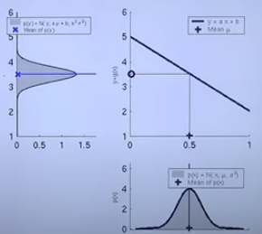
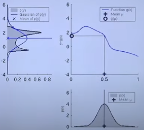

What happens if we are dealing with non-linear dynamic systems, such that we do not use our linear models anymore:
\[ x_t = A_tx_{t-1} + B_tu_t + \epsilon_t \] \[ z_t = C_t x_t + \delta_t \]But we introduce new functions that need not be linear:
\[ x_t = g(u_t, x_{t-1}) + \epsilon_t \] \[ z_t = h(x_t) + \delta_t \]Before, when we transformed our belief (a Gaussian) with a linear transformation, something like the following happened:

Where the distribution of the upper left is the result of transforming the distribution of the bottom by applying the linear function on the upper right. However, if we try to do this same thing with a non-linear transformation, we could end up with something like this:
 So, the result of the transformation is clearly no a Gaussian. Which means, the Kalman Filter is not applicable anymore. To prevent this problem we are going to use Local Linearization.